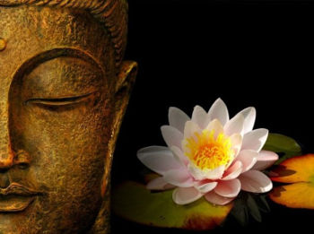

Немного буддизма

Есть три философских буддистских истины, которыми вы можете пользоваться каждый день и которые вам помогут.
Жизнь - сложная штука, и она вызывает страдания
Многие люди называют буддизм пессимистической и отрицательной доктриной. Все - из-за этой известной догмы этой религии - "Жизнь есть страдание". Но проблема в том, что большинство европейцев в корне неверно понимает это изречение. Буддизм на самом деле говорит вам: "Жизнь не очень ласкова и приятна. Так что и фиг с ним".
Буддисты утверждают, что мы испытываем большую часть наших страданий из-за того, что пытаемся избежать душевных мук или подавлять сложные эмоции. Нашу жизнь неизбежно сопровождают чувство потери, печаль, усталость, скука, тревога. Это постоянные спутники нашей жизни. И если мы пытаемся всего этого избежать путем покупки новых гаджетов или с помощью наркотиков, путешествий, неумеренных и беспорядочных половых связей и т.д., то это причиняет лишь еще больше неудовлетворенности, разочарования и других форм боли.
Как это использовать каждый день: Не покупайтесь на идею, будто вам чего-то не хватает, для "полного кайфа". Болезни, старение, смерть - все это часть жизни. Примите ее такой, какая она есть, и перестаньте мыслить фантазиями. Забудьте о том, что идеальная жизнь - это якобы жизнь легкая и безболезненная. Это заблуждение вызвала в нас индустрия моды, развлечений и фармацевтики.
Чем быстрее вы примете несовершенство жизни, тем меньше разочарований вас ждет. И тем проще вам будет открыть свое сердце неопределенности. И тем проще вам будет "забить" на ежедневный стресс и редкие неудачи.
Жизнь - это постоянное движение
Непостоянство означает, что жизнь, какой мы ее знаем, находится в постоянном движении. Мы никогда не можем получить доступ к моменту из прошлого. И не сможем повторить вчерашний день. Нет у нас и будущего. Оно иллюзорно.
Каждое утро вы просыпаетесь немного другим, не таким, как были вчера. Наши клетки отличаются на физическом уровне. В нашей голове - другие мысли. У нас немного другая температура тела. Мы дышим немного другим составом воздуха. Все вокруг нас меняется, хотя мы можем этого не замечать. Всегда.
Когда мы чувствуем себя неуютно, чувство "непостоянности", как это ни странно, может успокаивать. Если мы знаем, что в мире нет ничего постоянного, в том числе боли, мы знаем, что все плохое рано или поздно закончится. Но когда мы испытываем радость, то, естественно, хотели бы, чтобы это состояние было с нами всегда. Поэтому мы боимся этой идеи. Но правильной должно быть другое умозаключение: раз радость скоро пройдет, нужно максимально сосредоточиться на ней, получить от нее максимальное удовольствие.
Если мы принимаем идею непостоянства жизни и ее ценности, то это невероятно освобождает. Через 100 лет после того, как эту идею выразил Будда, ее повторил Гераклит, лихо заметив: "Нельзя войти в одну реку дважды". Все, что у вас на самом деле есть, - это настоящий момент.
Как это использовать каждый день: празднуйте изменения. Согласитесь, что все привычное так или иначе закончится. Все плохое, что кажется жутким сегодня, скоро пройдет, а все хорошее - останется в вашей памяти, если вы научитесь этим наслаждаться. Ваши отношения важнее туфель, новый iPhone не сделает счастливым дольше, чем на пару дней, а радость общения с детьми будет повторяться каждый день.
Вы сами постоянно меняетесь
Когда психотерапевт спрашивает у пациентов, что люди хотят получить по окончании терапии, то самый популярный ответ: "Я хочу найти себя". Наша культура привела нас к тому, что мы все уверены, будто в нас есть какое-то постоянное, истинное "я". Это где-то между нашим сердцем и печенью или где-то в мозгу? Кто знает!
Буддизм, однако, исходит из того, что нет никакого фиксированного, стабильного "я". Раз, согласно предыдущему принципу, все вокруг меняется, то меняемся и мы. Наша личность обновляется очень быстро. У нас есть тела, постоянные рабочие места, имена, наши профессии, - все, с помощью чего мы себя идентифицируем, то есть как бы "фиксируем".
Но главное - в том, что мы не останемся прежними, если не будем прилагать прежние усилия. С другой стороны, наша жизнь не изменится, если мы не будем каждый день делать то, что должны для того, чтобы изменить ее.
Как использовать это каждый день: Вместо того, чтобы сосредотачиваться на "поисках себя", мы должны сосредоточиться на том, чтобы создавать себя в каждый момент времени. Нет никакого нашего "постоянного" я, есть только мы в настоящий момент времени. И мы можем в любой момент измениться. Сегодня всегда отличается от вчера. Если сегодня у вас депрессия, это не значит, что она будет с вами всегда. Если вы не можете простить друзей или родственников за какой-то их проступок, это не значит, что вы не сможете простить их позже.
После того, как мы отпускаем идею нашей привязанности к некоему стабильному "я", мы можем расслабиться и насладиться текущим моментом. А завтра ведь все равно все будет по-другому. В каждый новый момент жизни вы уже новый.